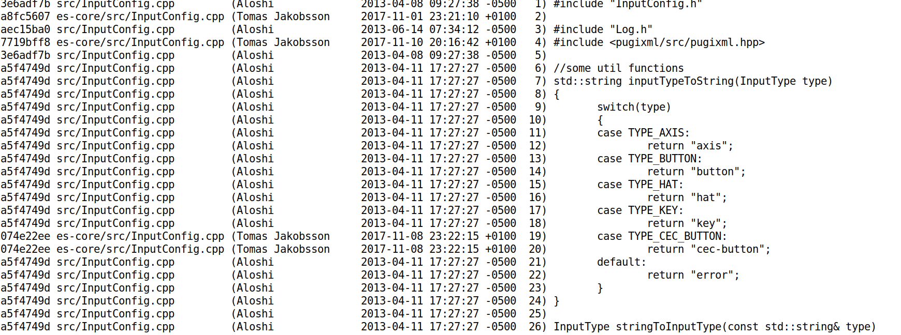

git
Gemeinsam mit Code
die UM:WELT verbessern
hzulla ● github.com/hzulla
Vorlage von JH Süd: Christian van Onzenoodt ● github.com/onc Vorlage von yuki: Florian Macherey ● github.com/yuki-93
Warte... Was ist Git?
- Versionsverwaltung für Dateien
- Strg-Z für Profis
Was ist git?
Das großartigste Werkzeug der Welt!
git ist dein Tagebuch
Das Tagebuch einer Software-Entwicklung.
git status
Was habe ich am Projekt verändert?
git commit
Nach getaner Arbeit den Zustand festhalten.
git log
Protokoll aller Arbeitsschritte und Side-Quests.
git diff
Jede Änderung verständlich und lesbar aufgedröselt.
git ist deine Zeitmaschine

Jeder frühere Zustand des Projekts sofort verfügbar.
git reist vor und zurück

Einen (alten) Zustand wiederherstellen.
git erlaubt Alternativen
Side Quests? Kein Problem. Man nennt dies einen Branch.
git tag
Releases und andere wichtige Zustände markieren.
git checkout
Tags/Branches wiederherstellen
oder neuen Branch -b starten.
git ist dein Radiergummi

Fehler im Code finden und sie rückgängig machen!
git bisect
Genau den Commit finden, der den Fehler ausgelöst hat.
git revert
Einen einzelnen Commit rückgängig machen.
git blame
Erklärt, wo jede einzelne Zeile des Codes herkommt.
git macht euch zum Team
Mehrere Entwickler im gleichen Projekt - kein Problem!
git ist verteilt
Das Projekt mit anderen teilen.
Änderungen hin- und herschicken.
Änderungen von anderen übernehmen.
git löst Team-Konflikte
Widersprechende Änderungen erkennen und auflösen.
git macht Teilen einfach
Du kannst dein Projekt auf github usw. veröffentlichen.
git macht Open Source einfach
Via github usw. können andere Entwickler dir helfen.
Häh?
Sucht im Netz nach einem git cheat sheet eurer Wahl.